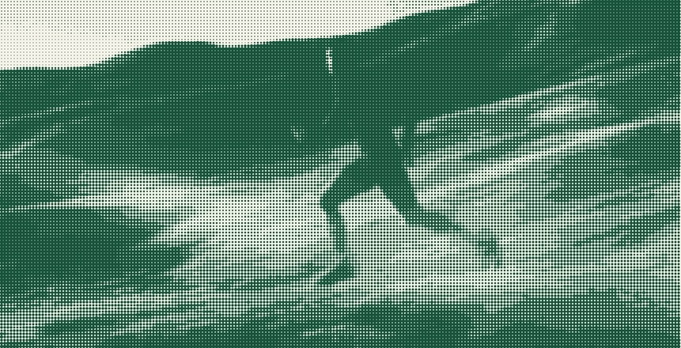

Nobody saw this one. It counted anyway.
No crowd, no clock, no result in any paper but this one. One ordinary training week, reported like the event it actually was.

The biggest game of the week had no tickets. It started before sunrise on a hill with no name, and the only one keeping score was the one running it.
That is how most of a season actually goes. The part people see — the race, the day it all works — lasts an hour. The part that decides it happens on dark mornings, in empty places, with nobody watching and nothing to prove it happened.
The Bible is blunt about this. It says the Father sees in secret. Not might see. Sees. Which means the empty hill on Tuesday had an attendance of one more than anybody thought, and the week counted — every unwatched kilometre of it.
Whatever your version of the dark morning is, it is on the board. More sport next issue →
| This week | Distance | Witnesses | Counted |
|---|---|---|---|
| Monday | 6.2 km | 0 | Counted |
| Tuesday | Rest | 0 | Counted |
| Wednesday | 8.0 km | 0 | Counted |
| Thursday | 6.2 km | 1 dog | Counted |
| Friday | Rest | 0 | Counted |
| Saturday | 14.5 km | 0 | Counted |
| Sunday | Walked | 0 | Counted |
Go deeper
Matthew 6:6 — “seen in secret.”
Galatians 6:9 — on not quitting before harvest.
1 Corinthians 9:24–27 — training, by a man who ran.
Fixtures · all week · no tickets required
The hill. Alone.
The bridge loop.
The long one.
A walk. Bring somebody.